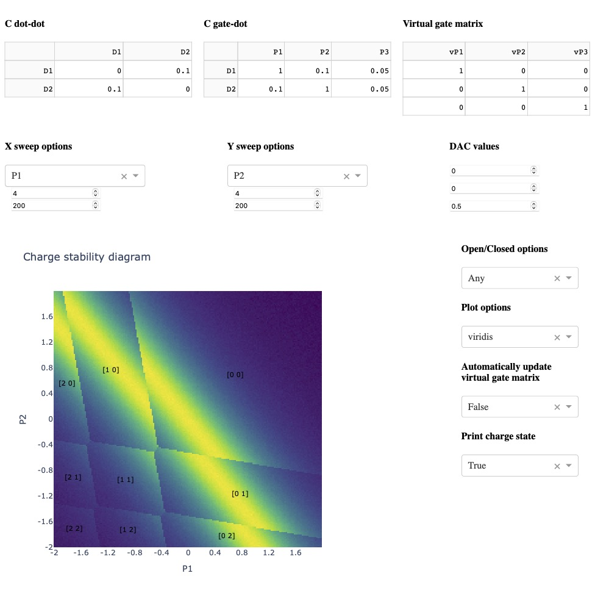

Introduction


Documentation:https://qarray.readthedocs.io/en/latest/introduction.html
QArray harnesses the speed of the systems programming language Rust or the compute power of GPUs using JAX XLA to calculate charge stability diagrams via the constant capacitance model in seconds or milliseconds. It couples highly optimised and parallelised code with two new algorithms to compute the ground state charge configuration of the simulated system. Our algorithms scale better than the traditional brute-force approach and do not require the user to specify the maximum number of charge carriers a priori. QArray can simulate the charge stability diagrams of quantum dot arrays in regimes where charges can tunnel between the dots and reservoirs (the open regime), as well as the case where the dots are isolated from the reservoirs (the closed regime).
QArray includes a graphical user interface (GUI) that allows users to interact with the simulation in real-time.

QArray runs on both CPUs and GPUs and is designed to be easy to use and integrate into your existing workflow. It was developed on macOS running on Apple Silicon and is continuously tested on Windows-lastest, macOs13, macOS14 and Ubuntu-latest.
QArray captures physical effects including charge sensing measurements and the thermal broadening of charge transitions. The combination of these effects permits the simulation of charge stability diagrams that are visually similar to those measured experimentally.
The plots on the left below are measured experimentally, and the plots on the right are simulated using QArray. Figure (a) shows the charge stability diagram of an open quadruple quantum dot array recreated with permission from [1] while (b) is a simulated using QArray. Figure (c) shows the charge stability diagram of a closed five dot quantum recreated with permission from [2]; (d) is our simulated recreation.
{kind=link}
The code to reproduces these plots can be found in the examples folder of the QArray repository, named figure_4b.py and figure_4d.py respectively.